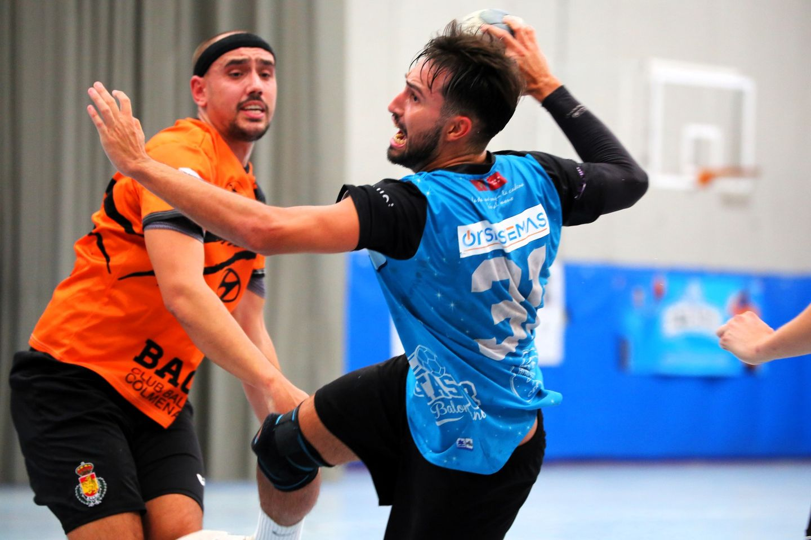

Noticias
El masculino se ve sorprendido por Sanse en la segunda mitad
Por su parte, el primer equipo masculino sufrió una derrota por tres goles (39-36) en su visita a Sanse. El equipo pastor llegaba a esta jornada en octava posición con una distancia de ocho puntos ante Getasur, quinto. El partido de ida se había saldado con victoria a favor de los azules (30-28) y la primera parte hacía presagiar un resultado similar cuando ambos equipos se fueron al descanso con 21-24 en el marcador. Sin embargo, la segunda parte no vio la mejor versión defensiva del equipo de Sergio Ambite y Sanse logró hacerse con los dos puntos. Raúl Blasco, con trece goles, fue el máximo anotador del equipo azul, seguido por los siete de Álvaro Vicario.
Ahora, Getasur debe afrontar la visita a La Alhóndiga de Móstoles, uno de los equipos más fuertes de la Segunda Nacional, tercer clasificado. En la ida, Getasur logró la victoria 28-32. Un resultado que tratará de replicar este domingo 11 a las 17 horas.
El segundo equipo femenino cayó contra el líder de Primera Nacional, Alcobendas (34-28), antes de este domingo (12 horas) recibir al segundo clasificado, Torrejón. En Segunda Territorial masculina, los de Juan Antonio Cabañas lograron una amplia victoria sobre GMadrid-LL Bar (37-19). Este sábado 10 (20 horas), visitan a Leganés, sexto clasificado. Por último, en Segunda Nacional femenina, Getasur cayó contra Base Villaverde Madrid (30-18) y este domingo 11 (13:30 horas) recibe a Grupo Egido Quental Pinto.
El masculino recupera la senda de la victoria
Por su parte, el primer equipo masculino sacó un triunfo amplio en su visita a Bacovi (26-33), con lo que logra sus primeros puntos de 2024. El partido estuvo marcado por una gran actividad defensiva y la velocidad en las transiciones del equipo azul, que le permitieron abrir distancias desde el primer minuto y llegar al descanso con 10-15 a su favor. Con seis goles, Álvaro Vicario, Daniel Bustos y Álvaro Rodríguez, “Golu”, fueron los máximos anotadores del equipo azul. El partido permitió ver en Segunda Nacional al portero juvenil Germán Framit (33%) y al central del equipo Territorial, Álvaro Aísa (2). Este domingo 28 (13:30), Getasur recibe a Leganés en su primer partido del año como local. Los pepineros, que marchan en última posición, llegan de caer 27-34 ante Móstoles.
En Primera Nacional femenina, Getasur se impuso a Core Global Parla 30-22 y este domingo 28 (12 horas) recibe en La Alhóndiga a Auto Sport Ibáñez Guadalajara. En Segunda Territorial masculina, cayó ante Coslada (33-21) antes de visitar este domingo (18:30) Osuna Madrid, del que le separa un solo punto, el que marca la zona de descenso. Por último, en Segunda Nacional femenina, empató ante GMadrid-LL Bar (17-17) y este sábado 27 (20 horas) visita a Virgen de Europa.

El masculino no encuentra su mejor versión en su visita a Salesianos
El primer equipo masculino de Getasur no pudo dar su mejor cara en la visita a un Salesianos que le derrotó sin ver peligrar sus ventajas en ningún momento. Con un ataque marcado por las pérdidas de balón y los fallos en los lanzamientos, solo Álvaro Vicario desde el extremo izquierdo encontraba la red oponente con cierta efectividad (10 goles de doce lanzamientos).
Tras este resultado (34-26), ahora los de Sergio Ambite afrontan la visita a un Bacovi que ha cosechado tres victorias en las once jornadas disputadas hasta la fecha, precisamente en sus enfrentamientos frente a los únicos tres equipos a los que supera en la clasificación. El partido de ida, con el que comenzó la temporada, se saldó con un amplio margen a favor de Getasur (33-23) que tratará de replicarlo esta vez para sumar su primera victoria en cuatro jornadas, tras las derrotas frente a Alcobendas, Corazonistas y Salesianos.
Por su parte, el equipo de Segunda Territorial masculina cayó ante Chinchón (20-28) y el de Segunda Nacional femenina hizo lo propio con Osuna Madrid (21-17). En la próxima jornada, el equipo de Nuria García de Primera Nacional reinicia la competición en 2024 con la visita de Parla (domingo 21, 12 horas) a La Alhóndiga, los de Juan Antonio Cabañas visitan a Coslada (domingo 21, 17:30) y las de Elena Navarro reciben a GMadrid (domingo 21, 13:30).
Estimados padres:
En los últimos meses se han producido varios incidentes en partidos de balonmano en la Comunidad de Madrid, algunos de los ellos en partidos de nuestro club. Incluso en categorías benjamines y alevines, se han visto escenas que considerábamos más propias de otros deportes que del nuestro, en las que el público manifiesta su descontento de forma irrespetuosa con los árbitros, entrenadores e incluso con los jugadores y jugadoras.
El nivel de agresividad y faltas de respeto hacia los componentes necesarios para que se pueda producir el juego influye en todos ellos de un modo muy poco educativo. Por desgracia, estamos perdiendo jugadores, jugadoras, técnicos y, especialmente, árbitros que, en muchos casos, están empezando y que necesitan un poco de comprensión, apoyo y respeto.
Hablamos de árbitros muy jóvenes, que en muchas ocasiones acuden a los partidos acompañados por sus padres, los cuales también tienen que oír los comentarios agresivos e insultos hacia ellos.
También tienen que sufrir este ambiente poco deportivo los jugadores y jugadoras en formación, que viven la tensión y a veces los insultos o la incitación a la agresividad por parte de los espectadores o de sus propios padres. Tras situaciones de este tipo, incluso deciden que no quieren seguir viviendo este ambiente, nada representativo de los valores de nuestro deporte y acaban por dejar la competición.
De la misma forma ocurre con los técnicos y monitores, que destinan su esfuerzo, tiempo y conocimiento para formarse, mejorar, entrenar, preparar partidos, dirigirlos, animar, conversar y enseñar a los y las deportistas en formación, en la mayoría de los casos por muy poca o ninguna remuneración económica y que tienen como único objetivo el aprendizaje, la educación, la mejora de sus jugadores y la evolución colectiva de sus equipos.
Los padres, como espectadores son un ejemplo para sus hijos y jugadores. Está en su mano ser un referente positivo cuando manifiestan respeto, templanza, generosidad, comprensión y fuerza mental. Todos ellos, valores que nos esforzamos en fomentar mediante el deporte, cada día, desde nuestro club.
Por todo ello, desde el Club Balonmano Getasur pedimos que seáis una referencia para todos en deportividad y fair play. Que la educación y el respeto sea la imagen de nuestro club siempre (tanto en pista como en playa). No podemos permitirnos perder ni un deportista más por hechos así, ni en nuestro club, ni en ningún otro, ni tampoco árbitros o técnicos de nuestro deporte.
Evitemos y no respondamos a aquellos agravios que podamos observar o escuchar en los campos de juego. El silencio, mantener la compostura y no caer en un camino que no queremos recorrer por las malas actitudes de otros, puede ser, en muchas ocasiones, un arma mucho más poderosa que cualquier respuesta y un ejemplo de conducta para quienes nos miran.
Que el clamor que se escuche por nuestras aficiones sea de ánimo y no de desprecio.
Gracias por vuestra ayuda y colaboración,
Club Balonmano Getasur